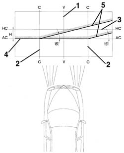
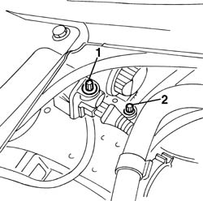
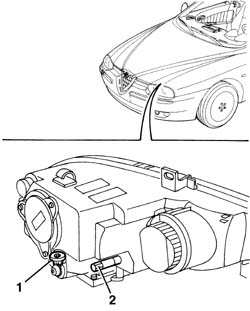

5540B38 headlamp/light cluster light beam - position
- Path
- Procedures > 55 ELECTRICAL EQUIPMENT > 5540 EXTERIOR LIGHTING > 5540B headlamps > 5540B38 headlamp/light cluster light beam - position
- Kind
- repair procedure (removal / refitting; the operation number is the code)
- Applies to
- all engines; all production periods
- Interactive page
- https://sloeber94.github.io/elrnDB-a156/en/#/3238449
Applies to: engines: 1.9 JTD 16v; all production periods
Applies to: all engines; all production periods
Prepare the vehicle complete with spare wheel, tools, fluids, fuel reserve.
Check that the tyre inflation pressure is correct.
Place the headlamp alignment switch in position '0'.
Position the vehicle on a flat surface, perpendicular to a screen or an opaque surface, 10 metres away, which contains the following lines.
1. V - V: vertical line corresponding to the trace of the plane of symmetry of the vehicle.
2. C - C: traces of the vertical planes passing through the reference centres of the light clusters.
3. HC - HC: horizontal line corresponding to the height from the ground of the reference centres for the light clusters.
4. AC - AC: horizontal line 11cm below the HC - HC line.
5. Lines inclined at 15° as illustrated in the diagram.

Applies to: all engines; all production periods
Switch on the dipped headlamps.
1. Vertical alignment.
Adjust the light cluster's vertical adjustment screw so that the horizontal section of the demarcation line between the area which is dark and the area which is lit up by the light beam coincides with the line AC - AC on the screen.
2. Horizontal alignment.
Adjust the light cluster's horizontal adjustment screw so that the point where the two horizontal and inclined demarcation lines intersect coincides with the point where lines C - C and AC - AC intersect on the screen.

Applies to: engines: 1.9 JTD 16v; all production periods; only with equipment: Xenon Gas headlamps
Applies to: all engines; all production periods; only with equipment: Xenon Gas headlamps
Prepare the vehicle complete with spare wheel, tools, fluids, fuel reserve.
Check that the tyre inflation pressure is correct.
Position the vehicle on a flat surface, perpendicular to a screen or an opaque surface, 10 metres away, which contains the following lines.
1. V - V: vertical line corresponding to the trace of the plane of symmetry of the vehicle.
2. C - C: traces of the vertical planes passing through the reference centres of the light clusters.
3. HC - HC: horizontal line corresponding to the height from the ground of the reference centres for the light clusters.
4. AC - AC: horizontal line 10 cm below the HC - HC line.
5. Lines inclined at 15° as illustrated in the diagram.
Applies to: all engines; all production periods; only with equipment: Xenon Gas headlamps
Switch on the dipped headlamps.
1. Vertical alignment. Adjust the light cluster's vertical adjustment screw so that the horizontal section of the demarcation line between the area which is dark and the area which is lit up by the light beam coincides with the line AC - AC on the screen.
2. Horizontal alignment. Adjust the light cluster's horizontal adjustment screw so that the point where the two horizontal and inclined demarcation lines intersect coincides with the point where lines C - C and AC - AC intersect on the screen.
